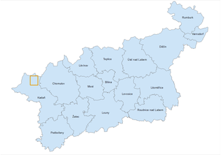

Poloha obce Location of the town
|  |
| Poloha Přísečnice v rámci Ústeckého kraje Location Přísečnice in the Ústí region |
| Poloha Přísečnice v rámci přehrady Location Přísečnice in the reservoir |
Obec Přísečnice se nacházela v SZ Čechách v oblasti Krušných hor mezi městy Vejprty, Výsluní a Kovářská v okrese Chomutov v Ústeckém kraji. Přibližné souřadnice středu bývalé obce jsou Y = 827 672 m, X = 988 271 m (S-JTSK).
Přísečnice ležela v údolí o průměrné nadmořské výšce 820 m obklopena vrchy Jelení hora, Velký Špičák, Malý Špičák a Měděnec. Obcí protékal Přísečnický potok, který byl napájen bystřinami z okolních svahů. Blízké okolí obce bylo kulturně obhospodařováno, převažovala orná půda, pastviny a louky. V širším okolí obce se pak nacházely smíšené a jehličnaté lesy.
Zástavba obce tvořila tvar položeného T a rozbíhala se podél komunikací směřující na sever ke Kryštofovým Hamrům, na západ k Vejprtům a na jih k Dolině a Rusové. Průměrně se v obci nacházelo kolem 450 domů a žilo až 4 tis. obyvatel. Dominantou obce byl kostel Nanebevzetí Panny Marie s vysokou obdélníkovou věží nacházející se v jižní části centrální zástavby. Dalšími významnými stavbami pak byly empírová radnice a barokní zámek stojící na náměstí. K Přísečnici patřily také tři mlýny a pivovar. Nejbližší vlaková zastávka se nacházela v obci Rusová.
")
|
| Přehrada (2.5D) The reservoir (2.5D) |